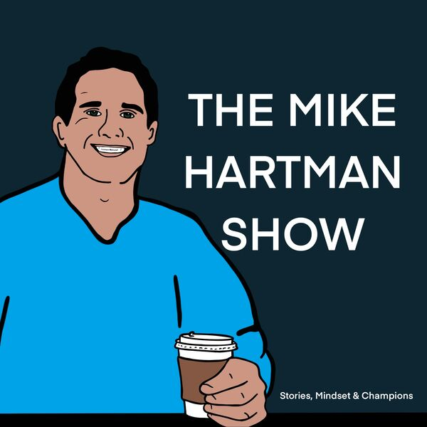
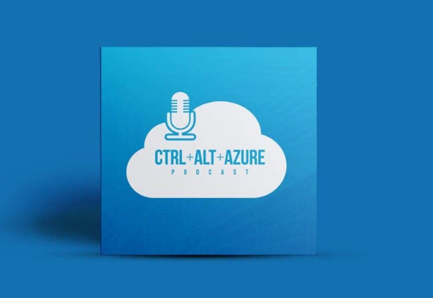
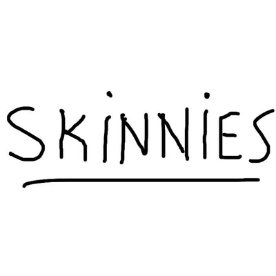
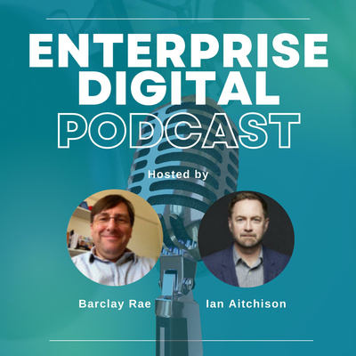
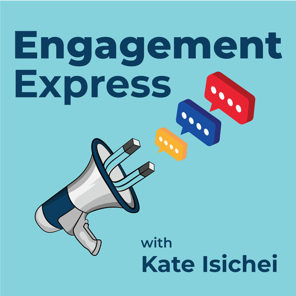
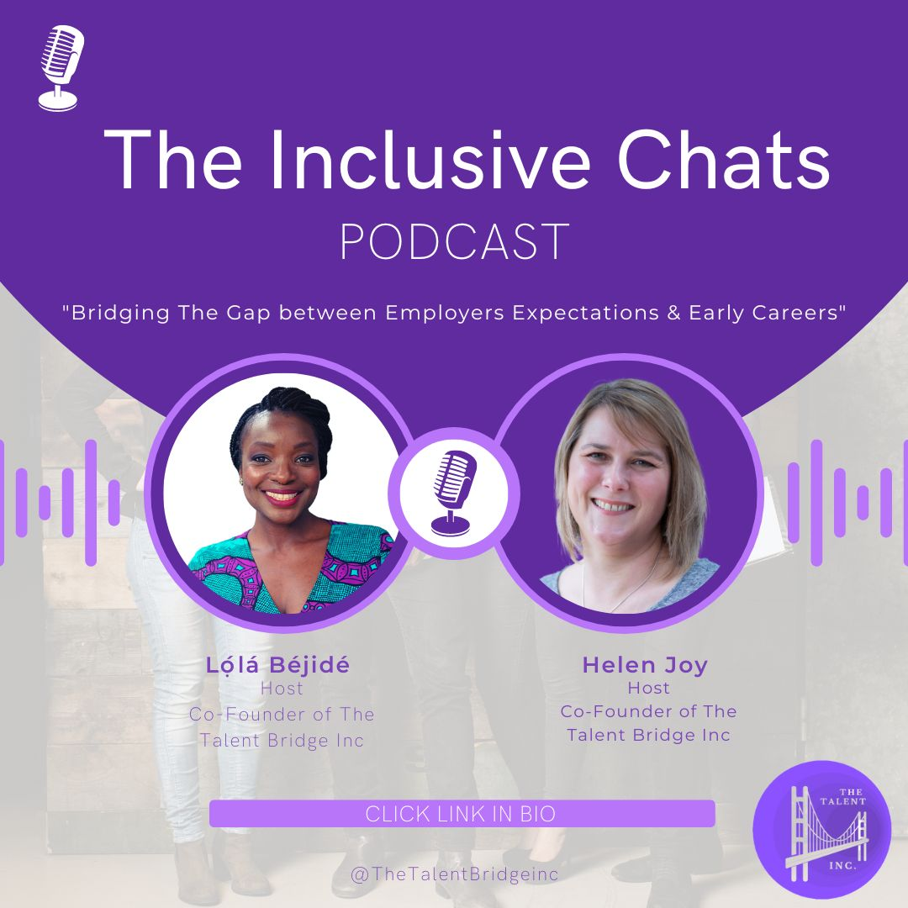

The Mike Hartman Show
I work with Mike Hartman, a former NHL player and Stanley Cup champion, to produce his podcast. Mike creates the content, while I handle the editing and upload the final product online for listeners to enjoy. With Mike's expertise as a former professional hockey player and my skills in audio editing, we make a strong team to deliver engaging and informative podcast content to fans. Let's bring Mike's unique insights and experiences to your ears!"

CTRL+ALT+AZURE Podcast
Join Tobias Zimmergren, a Cloud Architecture Content Lead at Microsoft, and Jussi Roine, CEO and co-founder of Not Bad Security, as they provide valuable insights into the tech world on their podcast. I have been editing this podcast since its launch in 2019, and with over 170 episodes, it has become a trusted source for the latest news and information in the industry. Tobias and Jussi bring a wealth of knowledge and expertise to the table, while I ensure the audio quality is top-notch and ready for listeners to enjoy

The Skinnies Podcast
"I and Ayinke (the skinny one, my ever beautiful and gracious co-host on our entertaining and thought-provoking podcast that is geared towards the youth and Generation Z. We delve into a variety of issues affecting young people and provide fresh perspectives and insightful discussions. I handle the editing and distribution of the podcast, while Ayinke assists with promotion. Together, we make a dynamic duo, bringing engaging content to the airwaves and providing a platform for the voices of the next generation. Let's explore the world, one episode at a time!"

The Enterprise Digital Podcast
Join Barclay Rae and Ian Aitchison on their insightful podcast, The Enterprise Digital. Launched in 2020, this podcast covers the latest trends and developments in the world of digital enterprise and has already released over 60 episodes. As the editor of the podcast since its inception, I bring a level of technical expertise to ensure a polished and professional final product for listeners. With Barclay and Ian's extensive knowledge and experience, The Enterprise Digital is a must-listen for anyone looking to stay ahead in the world of digital enterprise.

Engagement Express Podcast
In October 2022, I teamed up with Kate Isichei, a Global Internal Comms Consultant, as we work to revamp and refresh her podcast. This project involves a complete overhaul of the podcast's editing, giving it a new and engaging feel. I handle the editing, and also design audiograms for social media promotion. With Kate's expertise as a communications consultant and my skills in audio production, we make a strong team to bring a new and improved podcast to listeners.

The Inclusive Chat Podcast
Join Lola Bejide and Helen Joy, co-founders of The Talent Bridge Inc, on their recently launched podcast that aims to bridge the gap between employer expectations and early career professionals. As the editor, I work with Lola and Helen to bring their insightful content to life and ensure a polished and engaging final product. While they focus on creating top-quality content, I assist with the editing process, making sure every episode is ready for listeners to enjoy. Let's help early career professionals succeed and thrive with The Talent Bridge podcast..